Pra-QA LULUS gagal 0 peringatan 1 lulus 35 belum disetujui
Arahkan kursor ke blok untuk detail · ▲ = thumbnail (klik) · ♪ = SFX · kata hijau di transkrip = anchor elemen.
Halo parents, hati-hati ya.
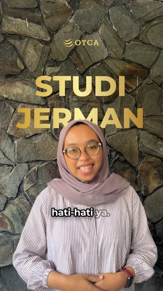
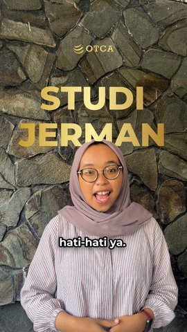
| Tipe / efek | Teks | Waktu (s) | Durasi | Anchor | Masuk/keluar | Pra-QA |
|---|---|---|---|---|---|---|
| gambar | aset/grafis/logo-otca.png | 0.00–58.60 | 58.60s | fade/fade | ✅ | |
| push | push ×1.04, gerak 3.00s, standar | 0.00–3.30 | 3.30s | / | ✅ | |
| depth | STUDI JERMAN | 0.88–3.25 | 2.37s | kata “Halo” | naik/fade | ✅ |
Anak sudah punya sertifikat bahasa Jerman, belum tentu kemampuan bahasanya sudah siap untuk studi di Jerman.
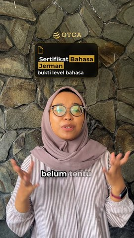
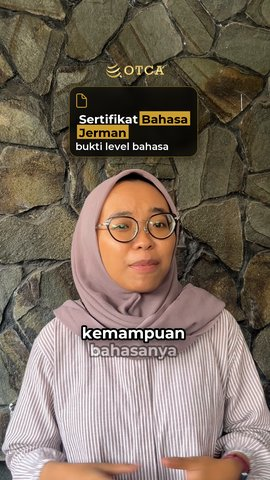
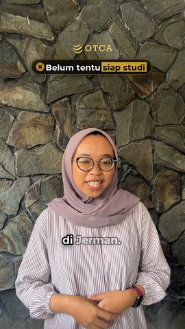
| Tipe / efek | Teks | Waktu (s) | Durasi | Anchor | Masuk/keluar | Pra-QA |
|---|---|---|---|---|---|---|
| info | Sertifikat Bahasa Jerman bukti level bahasa | 4.21–7.80 | 3.59s | kata “sertifikat” -0.15s | pop/fade | ✅ |
| kamera digital-zoom@0.2 | 5.96–7.80 | 1.84s | kata “belum” | digital-zoom/digital-zoom | ✅ | |
| chip | Belum tentu siap studi | 8.28–10.12 | 1.84s | kata “siap” | pop/fade | ✅ |
Karena sertifikat menunjukkan level bahasa yang berhasil dicapai. Tapi belum tentu menggambarkan seberapa siap sih anak menggunakan bahasa Jerman dalam situasi akademik dan juga sehari-harinya.
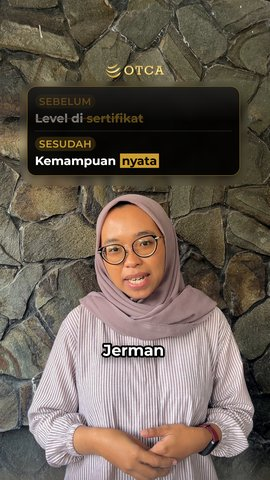
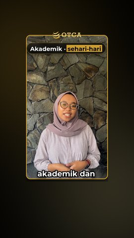
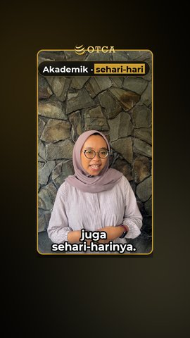
| Tipe / efek | Teks | Waktu (s) | Durasi | Anchor | Masuk/keluar | Pra-QA |
|---|---|---|---|---|---|---|
| remotion sebelum-sesudah@0.1 | Level di sertifikat Kemampuan nyata | 10.68–19.91 | 9.23s | kata “sertifikat” ke-2 -0.20s | naik/fade | ✅ |
| kamera pull-back-reveal@0.2 | 20.11–23.24 | 3.13s | kata “dalam” | pull-back-reveal/pull-back-reveal | ✅ | |
| chip | Akademik · sehari-hari | 20.91–23.24 | 2.33s | kata “akademik” -0.10s | pop/fade | ✅ |
Di perkuliahan, anak perlu memahami penjelasan dosen. memahami materi, berdiskusi, bertanya, sampai menyampaikan pendapat dengan jelas.
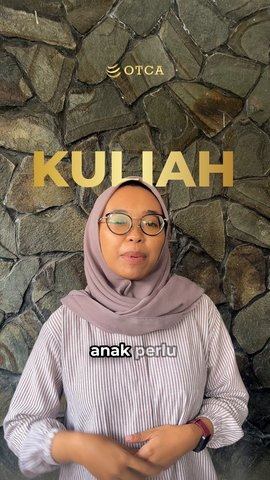
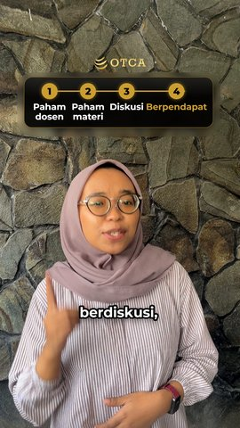
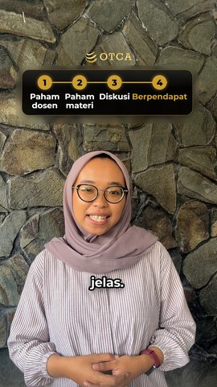
| Tipe / efek | Teks | Waktu (s) | Durasi | Anchor | Masuk/keluar | Pra-QA |
|---|---|---|---|---|---|---|
| depth | KULIAH | 23.53–25.83 | 2.30s | kata “perkuliahan” | naik/fade | ✅ |
| remotion langkah@0.1 | Paham dosen Paham materi Diskusi Berpendapat | 25.93–34.35 | 8.42s | kata “dosen” -0.30s | naik/fade | ✅ |
Jadi jangan hanya fokus pada level sertifikat. Perhatikan juga apakah kemampuan mendengar, berbicara, menulis, dan membaca sudah cukup seimbang dan benar-benar bisa digunakan.
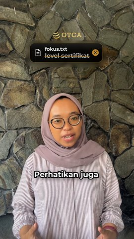
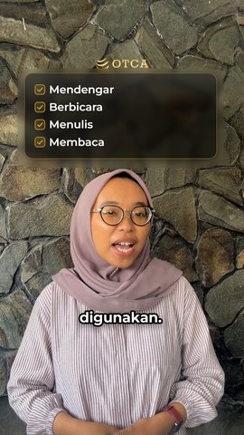
| Tipe / efek | Teks | Waktu (s) | Durasi | Anchor | Masuk/keluar | Pra-QA |
|---|---|---|---|---|---|---|
| remotion coret@0.1 | fokus.txt level sertifikat | 34.60–38.42 | 3.82s | kata “Jadi” +0.10s | naik/fade | ✅ |
| remotion checklist@0.3 | Mendengar Berbicara Menulis Membaca | 39.20–45.83 | 6.63s | kata “kemampuan” ke-2 +0.30s | naik/fade | ✅ |
Karena yang dibutuhkan saat studi bukan hanya bukti level bahasa, tapi kemampuan yang benar-benar terpakai.
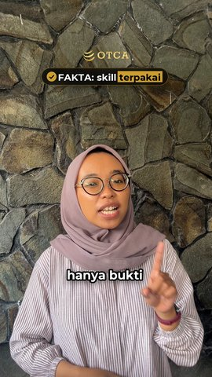
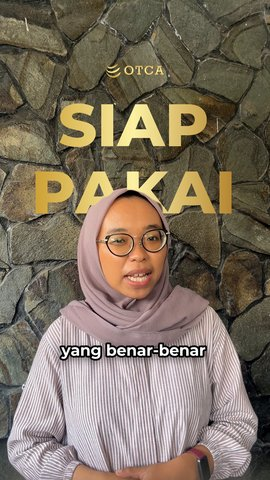
| Tipe / efek | Teks | Waktu (s) | Durasi | Anchor | Masuk/keluar | Pra-QA |
|---|---|---|---|---|---|---|
| chip | FAKTA: skill terpakai | 48.19–50.03 | 1.84s | kata “bukan” | pop/fade | ✅ |
| depth | SIAP PAKAI | 50.43–52.72 | 2.29s | kata “kemampuan” ke-3 | naik/fade | ✅ |
Klik link di bio dan siapkan bahasa Jerman anak lebih matang sebelum berangkat studi ke Jerman.
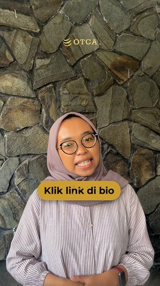
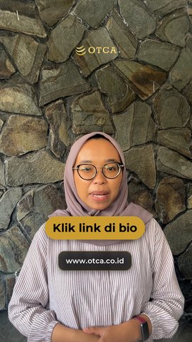
| Tipe / efek | Teks | Waktu (s) | Durasi | Anchor | Masuk/keluar | Pra-QA |
|---|---|---|---|---|---|---|
| cta | Klik link di bio | 52.77–58.67 | 5.89s | kata “Klik” | pop/fade | ✅ |
| remotion partikel@0.1 | Partikel | 52.77–53.62 | 0.85s | kata “Klik” | naik/fade | ✅ |
| teks | www.otca.co.id | 53.17–58.67 | 5.49s | kata “Klik” +0.40s | naik/fade | ⚠️ K01.4 cta/1-teks/teks: latar tidak tersampel |
| ID | Aturan | Detail | |
|---|---|---|---|
| ⚠️ | K01.4 | Kontras setiap teks (caption, judul, kartu, CTA) terhadap latar efektifnya (panel, stroke, atau video di belakangnya, pe | cta/1-teks/teks: latar tidak tersampel |
| ✅ | E05.1 | Durasi elemen ber-`efek: digital-zoom` dalam rentang `durasi` (1–2 s). | 1 elemen dalam 1–2s |
| ✅ | E07.3 | Stagger antar item dalam rentang `stagger` (0.6–1.0 s). | 1 kartu |
| ✅ | E11.1 | Durasi elemen ber-`efek: pull-back-reveal` dalam rentang `durasi` (3–5 s). | 1 elemen dalam 3–5s |
| ✅ | K00.1 | Kotak pembatas setiap elemen teks/grafis berada di dalam zona aman pada setiap frame saat ia tampil, termasuk saat anima | 78 elemen di dalam zona aman [108, 250, 960, 1520] |
| ✅ | K00.2 | Dua elemen teks tidak tumpang tindih pada waktu yang sama (kecuali caption di atas teks depth). | |
| ✅ | K00.3 | Elemen informasi tidak menutupi wajah: kotak teks elemen menutup ≤ `koreografi.tutup-wajah-maks` (10 %) kotak wajah sela | 19 elemen ≤ 10% wajah tertutup |
| ✅ | K01.1 | Timing caption berasal dari transkrip ber-timestamp per kata (`cache/words.json`, WhisperX / forced alignment), bukan pe | backend whisperx, 55 potongan |
| ✅ | K01.2 | `words.json` sudah dikoreksi manual (`"dikoreksi": true`): ejaan, nama, istilah. | |
| ✅ | K01.3 | Satu potongan caption ≤ `caption.baris-maks` baris dan ≤ `caption.karakter-maks-baris` karakter per baris. | 55 potongan ≤ 2 baris × 18 karakter |
| ✅ | K01.5 | Setiap potongan tampil ≥ 0,3 detik; kecepatan baca ≤ `qa.karakter-per-detik-maks`. | |
| ✅ | K01.6 | Kata yang sedang diucapkan terlihat: mode `aktif` → disorot `caption.warna-aktif`; mode `karaoke` → kata yang belum diuc | karaoke: kata berikutnya diredupkan 40% |
| ✅ | K01.8 | Ukuran font setiap teks ≥ `qa.ukuran-min-px`. | semua teks ≥ 40 px |
| ✅ | K02.2 | Feather tepi mask 1–2 px (`mask.feather-px`). | 1.5 px |
| ✅ | K02.3 | Teks depth maksimal 2 kata dan tetap TERBACA: bagian huruf yang tertutup subjek rata-rata ≤ `depth.qa-tutup-rata` (30 %) | hook/2-depth 'STUDI JERMAN': tertutup rata-rata 3%, maks 4% poin-2/1-depth 'KULIAH': tertutup rata-rata 4%, maks 4% ringkasan/1-depth 'SIAP PAKAI': tertutup rata-rata 9%, maks 9% |
| ✅ | K02.6 | Teks depth tidak bertumpuk dengan teks/panel lain yang tampil bersamaan (penataan otomatis menghindari pita teks lain; r | 3 teks depth bebas tumpuk |
| ✅ | K04.1 | Rekaman hasil ingest: resolusi = `format.resolusi`, fps = `format.fps`, tinggi sumber ≥ `ingest.tinggi-min`. | 1080x1920@30 |
| ✅ | K04.4 | Audio dibersihkan (highpass + denoise) dan dinormalisasi ke `audio.lufs` saat ingest. | audio.wav -14.3 LUFS (sumber -29.77) |
| ✅ | K05.1 | Tidak ada gerak linear; setiap animasi memakai kurva dari `easing.*`. | |
| ✅ | K05.2 | Elemen berisi beberapa item muncul dengan stagger ≥ `durasi.stagger`. | 2 kartu ber-stagger |
| ✅ | K05.3 | Teks tampil penuh (di luar animasi masuk/keluar) ≥ `durasi.tahan-min`. | |
| ✅ | K05.4 | Gerak cepat (> `motion-blur.ambang-px` per frame) diberi motion blur. | dipakai di 0 lapisan-frame |
| ✅ | K05.5 | Gerak besar (judul, kartu, push) dimulai dalam ±0,15 detik dari awal kata atau beat. | |
| ✅ | K06.3 | Whoosh/riser pada transisi di level `sfx.level-db` (rendah); musik di-duck terhadap suara (sidechain). | 28 sfx ≤ -18 dB |
| ✅ | K08.1 | Setiap elemen visual yang masuk dengan gerak punya bunyi (otomatis dari `sfx.peta` atau eksplisit). Diam hanya bila dise | 28 bunyi |
| ✅ | K08.2 | Dua bunyi (selain klik ketik) berjarak ≥ `sfx.jarak-min` detik — tidak menumpuk. | jarak ≥ 0.06s |
| ✅ | K08.3 | Level tiap bunyi ≤ −16 dB terhadap suara (kelas `sfx.level`); bus SFX tidak clipping. | |
| ✅ | K08.4 | Bunyi berulang memakai varian bergilir (tidak identik berturut-turut). | varian bergilir |
| ✅ | K09.1 | Perangkat yang sama (efek remotion / info / chip-<status> / kartu / …) tidak dipakai di dua beat berurutan. | 7 beat tanpa perangkat berulang berurutan |
| ✅ | K09.2 | Jumlah perangkat berbeda per video ≥ `koreografi.variasi-min` (atau `variasi_min` koreografi yang dipakai). | 14 perangkat berbeda (min 5): checklist, chip-benar, chip-info, chip-salah, coret, cta, depth, digital-zoom, gambar, info, langkah, partikel, pull-back-reveal, sebelum-sesudah |
| ✅ | K09.3 | Transisi (jenis apa pun) tidak di beat hook dan maksimal 1 per beat. | |
| ✅ | K09.4 | Tiap perangkat mencantumkan `fungsi` dari daftar `koreografi.fungsi` (alasan perangkat ini dipakai). | |
| ✅ | K09.6 | Video memakai ≥ `koreografi.khas-min` (2) efek KHAS gaya (modul efek mencantumkan gaya di `gaya_cocok`; termasuk transis | 3 efek khas glass-tech: digital-zoom, pull-back-reveal, blur-zoom (min 2) |
| ✅ | T01.1 | Semua `beat_wajib` ada di beat-sheet. | 7 beat |
| ✅ | T01.2 | Durasi akhir 60–90 s (± `qa.durasi-toleransi-s`). | 58.7s (template 60–90s ±3) |
| ✅ | T01.3 | Beat hook berakhir ≤ `hook_maks` detik. | hook selesai 3.30s (maks 3.5) |
| ➖ | E11.2 | Klip broll efek ini: rasio = proyek, resolusi ≥ `format.resolusi`, fps = `format.fps`. | dukungan native: tidak memakai klip broll |
| ➖ | K02.1 | Elemen `depth` hanya dirender bila mask subjek tersedia untuk seluruh rentang waktunya (`cache/masks/`). | dicek setelah render penuh |
| ➖ | K06.1 | Loudness terintegrasi hasil akhir = `audio.lufs` ± `audio.lufs-toleransi` (−14 LUFS untuk media sosial). | dicek setelah render penuh |
| ➖ | K06.2 | True peak ≤ `audio.true-peak` dBTP. | dicek setelah render penuh |
| ➖ | K07.1 | Master tersimpan (`out/master.mov`, ProRes 422 HQ). | dicek setelah render penuh |
| ➖ | K07.2 | Versi platform: H.264, `format.resolusi`, `ekspor.pix_fmt`, tag warna bt709 (primaries/trc/matrix), AAC. | dicek setelah render penuh |
Revisi beat-sheet.json lalu video.py storyboard 2026-10_otca-sertifikat-jerman lagi, atau setujui:
video.py setuju 2026-10_otca-sertifikat-jerman → video.py semua 2026-10_otca-sertifikat-jerman.